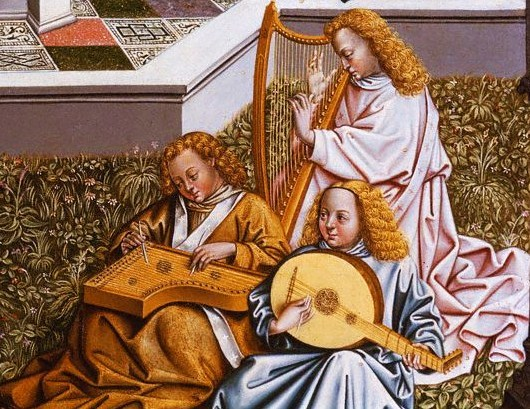
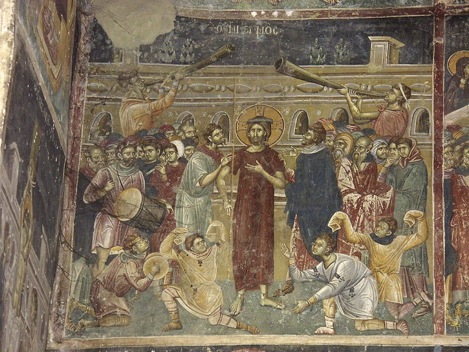
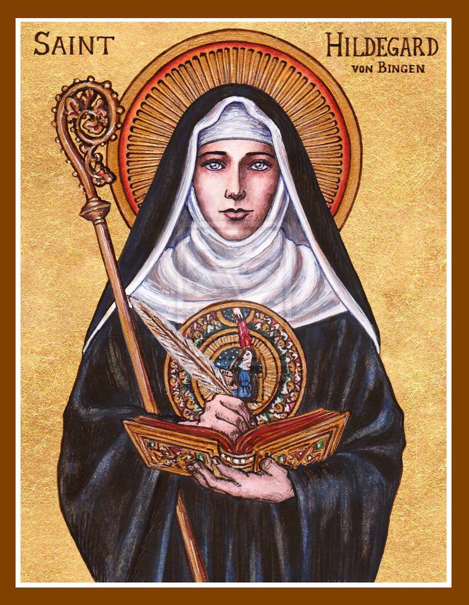
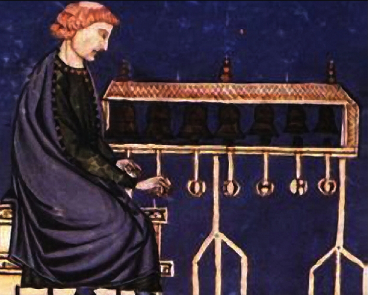

The term "medieval" refers to a period of music that extends from about 500 AD to the mid-fifteenth century.By this time, music was the dominant art of taverns and cathedrals, practiced by kings to paupers alike. It was during this extended period of music that the sound of music became increasingly familiar. This is partly due to the development of musical notation, much of which has survived, which gives us a window back to this fascinating time.
Instruments were built based on the composer's imaginations. The Medieval music was accompanied by a wide range of wind, brass, and percussion instruments, though the human voice still dominates many of the compositions. We see the rise of instrumental pieces in their own right towards the end of the high medieval era, which paved the way for many musical forms in the following period.
Hildegard von Bingen, Leonin, Perotin, Guillaume de Machaut, and Dufay are among the most important composers.
  

EXAMPLE OF MUSIC
Hildegard von Bingen - Ave generosa
In this glorious hymn, Hildegard skillfully weaves together several of her most characteristic images and symbols to celebrate the complementary themes of the Virgin Mary’s chaste union with God and her giving birth to God’s Son in the flesh. The perspective of the hymn moves back and forth between the realm of heaven and its eternal symphony, on the one hand; and the Virgin’s womb and its classic symbol, the lily, on the other. The point of contact between the two, then, is when the Heavenly Bridegroom brings the eternal symphony into the Virgin’s joyous bedchamber and the Incarnate Word enters the world in song.
The opening verse sets the tone by marrying the language of the court—to be generosa was to be born of noble stock, and thus to be bred to be “generous”—with the praise of Mary’s untouched chastity. Both elements combine to make her the “material”—matter, mother, and matrix—whose perfect holiness befits the garment that will be crafted from that material (cf. O splendidissima gemma). The second verse then recalls an image from the responsory, O vis eternitatis, of human nature as a garment, soiled by the Fall but “washed and cleansed” of its suffering by the suffering of the Incarnate Christ. Here, Hildegard describes the Word “clothed in flesh” in Mary’s maternal material of holiness, infused (infusio—“flood”) from above (superna).
Guillaume Dufay - Ave Maris Stella("Hail, star of the ocean")
Twelfth century Cistercian mystic Bernard of Clairvaux passionately explored new symbols for the beauty of the Virgin Mary. He called her portal of heaven, the vessel for the coming of Christ, and simultaneously the gateway for mankind's ascension. He read her name, Maria, as maris stell (star of the sea). His graceful exegesis of her name led to a mistaken attribution to Bernard of the Vesper hymn to the Virgin Mary, Ave maris stella. In fact, the hymn predates Bernard of Clairvaux by centuries. However, the luscious Latin of this hymn, from its opening "Ave" which echoes the greeting of the Angel Gabriel, through its series of petitions to Mary the mediatrix of sinners eloquently fits Bernard's devotion to the Virgin. Similarly, by the dawn of the Renaissance, the Gregorian chant hymn Ave maris stella inhabited chantbooks throughout the churches and chapels of Europe. When Guillaume Dufay set about to write his cycle of polyphonic Vespers hymns, he lavished loving care on the crafting of his Ave maris stella.